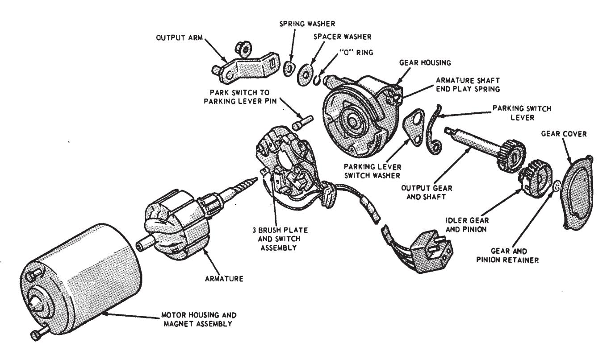

Windshield Wipers and Washers · 35-07-01a
The windshield wipers are actuated by a permanent magnet, rotary type electric motor. The two wiper arms and blades are mounted on a pivot shaft, one at each side of the windshield. The pivot shafts are connected to the motor by linkage arms and attaching clips.
Motor Current Draw Test
Disconnect the linkage from the motor and disconnect the electrical plug to test the motor on the vehicle. Connect the green lead from the test equipment to the battery positive post (Fig. 22). Connect the positive (red) lead from the tester first to the low speed connection and then to the high speed connections at the connector plug as shown. In either case, the current draw should not exceed 3 ampers.
Motor Park Switch Test
Stop the wiper system with the ignition switch so that the wiper blades are not in park position. Connect jumper wires as shown in Fig. 23. The wipers should not run more than one full cycle and then park. If the motor will not park or will not run to park position, replace the park switch. If the motor stops correctly check the windshield wiper manual control switch and the wiring for continuity.
Windshield Wiper Manual Control Switch Tests
Continuity Test
Check the continuity between terminals of the switch as shown in Fig. 24. For a system without intermittent control either a self powered test light or an ohmmeter can be used.
For a system with intermittent control an ohmmeter must be used. A zero ohms reading indicates continuity between all terminals except between terminals No. 56 and 28 when the switch is in the intermittent position. As the switch knob is rotated to the left, resistance should begin to show on the ohmmeter and it should increase to 6000 to 7000 ohms as the knob reaches the extreme left position.
If continuity and/or resistance does not exist between the terminals as indicated in Fig. 24, replace the switch. If continuity does exist as specified, check the wiring and repair or replace as necessary.
Circuit Breaker Test
Place the switch in off position and connect the variable resistance unit of a Rotunda Volt-Amp Tester as shown in Fig. 14. The Lincoln Continental switch is shown, but the Falcon, Maverick, Fairlane, Montego, Mustang and Cougar switches are connected in the same manner, except that they use terminals 63 and 763. See Fig. 24 for terminal identification.
Set the master control to maximum resistance position intially to prevent damage to the circuitry and ammeter.
Low Current Pass Test
Adjust the variable resistance until the ammeter indicates 7 amperes. The ammeter should indicate the specified current for ten minutes. If the circuit will not indicate specified current for ten minutes (current drops to zero), replace the switch.
High Current Pass Test
Adjust the master control until the ammeter indicates 14 amperes. The circuit should open within 30 seconds (current drops to zero); otherwise the switch must be replaced.
Maverick Removal and Installation
Wiper Motor
On all models, wiper motor removal requires that the instrument cluster be removed first. Follow the instrument cluster removal instructions given in Part 33-03.
If the vehicle is equipped with air conditioning, the center connector and duct assembly will have to be removed for access to the motor. Remove the mounting bracket screw behind the center duct, disconnect the assembly from the plenum chamber and from the left duct, and pull the center connector and duct assembly out through the cluster opening. See GROUP 34 for illustrations.
Working through the cluster opening, disconnect the two pivot shaft links from the motor drive arm by removing the retaining clip. Disconnect the wiring plug at the motor, remove the three motor-to-mounting bracket bolts, and take the motor out through the cluster opening.
If the motor is being replaced, transfer the drive arm to the new motor. After installing the motor to the mounting bracket, first connect the right pivot shaft link to the motor drive arm and then connect the left link. When connecting the linkage drive arm to the motor crank pin, be sure that the connecting clip is forced into locked position as shown in Fig. 22.
When installing the center connector and duct assembly on air conditioned vehicles, insert the end near the mounting bracket into the left duct and the opposite end into the plenum chamber. Secure the assembly in place with the mounting bracket screw.
Pivot Shaft and Link Assemblies
Left Assembly Removal and Installation
The instrument cluster must be removed for access to the left pivot shaft and link. Follow the instrument cluster removal instructions given in Part 33-03.
Remove the wiper arm and blade assembly from the pivot shaft as described in Section I of this part. Working through the cluster opening, disconnect both pivot shaft links from the motor drive arm by removing the retaining clip. Remove the three bolts that retain the left pivot shaft assembly to the cowl, and take the left pivot shaft and link assembly out through the cluster opening.
Before installing, cement a new gasket to the pivot shaft mounting flange. Tighten the retaining bolts to 3-7 ft-lbs. After installing the pivot shaft and link assembly to the cowl, first connect the right pivot shaft link to the motor drive arm and then connect the left link. Be sure that the connecting clip is in locked position as shown in Fig. 21.
Right Assembly Removal and Installation
Disconnect the battery and remove the wiper arm and blade assembly from the pivot shaft, as described in Section 1 of this part.
If the vehicle is equipped with air conditioning, the right duct assembly will have to be removed for access to the right pivot shaft. Unclip the duct from the right connector and slide the left end out of the plenum chamber. Lower the duct assembly out from under the instrument panel. See GROUP 34 for illustrations.
From under the instrument panel, disconnect first the left and then the right pivot shaft link from the motor drive arm by removing the retaining clip. Reaching between the utility shelf and the instrument panel, remove the three bolts that retain the right pivot shaft and link assembly to the cowl. Lower the assembly out from under the instrument panel.
Before installing, cement a new gasket to the pivot shaft mounting flange. After installing the pivot shaft and link assembly to the cowl, be sure that the right pivot shaft link is connected to the motor drive arm before connecting the left link. Be sure that the connecting clip is in locked position as shown in Fig. 21.
When installing the right duct on air conditioned vehicles, insert the end without the clip into the plenum chamber and fasten the clip end to the right connector.
Windshield Wiper Switch
If the vehicle is equipped with air conditioning, the left duct connector will have to be removed for access to the switch. Disconnect the left duct from the duct-to-register connector, loosen the two nuts that retain the left register to the utility shelf, and then remove the connector from the register. See GROUP 34 for illustrations.
Release the control knob retaining spring by pressing in through the slot in the knob, and pull the knob from the shaft. Remove the switch retaining nut and lower the switch from under the instrument panel. Disconnect the multiple plug from the switch, and remove the switch from the vehicle.
When installing the control knob, push the knob onto the switch shaft until it is engaged by the retaining spring.
Falcon, Fairlane and Montego Removal and Installation
Wiper Motor
- Disconnect the battery ground cable.
- Disconnect the wiper motor wiring connector.
- Remove the cowl top left vent screen (4 retaining drive pins).
- Remove the wiper link retaining clip from the wiper motor arm.
- Remove the three wiper motor retaining bolts and remove the wiper motor and mounting bracket.
- Transfer the wiper motor mounting bracket and related parts to the replacement wiper motor.
- Position the wiper motor and mounting bracket to the dash panel, and install the three retaining bolts.
- Position the wiper link on the motor drive arm and install the connecting clip. Be sure to force the clip locking flange into locked position as shown in Fig. 21.
- Install the cowl top vent screen and secure with four drive pins.
- Check the motor operation and connect the wiring plugs.
Pivot Shaft and Link Assembly
- Open the hood, disconnect the battery ground cable and remove the wiper arm and blade assemblies from their pivot shafts as described in Section 1 of this part.
- Remove the cowl top left vent screen (4 retaining drive pins).
- Remove the drive arm to pivot retaining clip.
- Remove the three retaining screws from each pivot and remove the pivot shaft and link assembly.
- Transfer the right pivot if necessary by removing the connecting clip (the left pivot is part of the link assembly).
- Position the pivot shaft and link assembly in the cowl, install the pivot shaft retaining screws and tighten to 3-7 ft-lbs torque.
- Position the left link on the motor drive arm and install the connecting clip. Be sure to force the clip locking flange into locked position as shown in Fig. 21.
- Install the wiper arms and blades. See Section I of this part.
- Check the wiper operation.
- Install the cowl top vent screen and secure with four drive pins.
Windshield Wiper Switch — Falcon
Removal
- Disconnect the battery ground cable.
- Remove the wiper/washer switch control knobs and unplug the connectors at the switch.
- Remove the two switch retaining screws from the cluster and remove the switch from under the instrument panel.
- Remove the two screws from the switch assembly and separate the washer switch from the wiper switch.
Installation
- Position the switches together and install the two assembly retaining screws.
- Position the switch to the back of the cluster and install the retaining screws.
- Connect the switch connectors and install the control knobs.
- Connect the battery ground cable and check the operation of the switch.
Windshield Wiper Switch — Fairlane and Montego
- Disconnect the battery cable.
- Remove the wiper switch knob, bezel nut, and bezel.
- Pull out the switch from under the instrument panel. Disconnect the plug connector from the switch and remove the switch.
- Position the switch and connect the plug connector.
- Position the switch in the instrument panel and install the bezel, bezel nut, and knob.
- Connect the battery cable and check the operation of the switch.
Mustang and Cougar Removal and Installation
Wiper Motor
Disconnect the battery ground cable.
Remove the wiper arm and blade assemblies from the pivot shafts as described in Section I of this part. Disconnect the washer hose (left side) at the T fitting on the cowl grille. Remove the cowl tip grille (eight screws).
The motor is located inside the left fresh air plenum chamber. Disconnect the motor ground wire (one screw at the forward edge of the plenum chamber). Disconnect the motor wire harness at the plug and push it back into the plenum chamber. Disconnect the linkage drive arm from the motor output arm crankpin by removing the retaining clip.
Rotate the output arm so that the crank pin is toward the right side of the vehicle, remove the three bolts that retain the motor and cover to the mounting bracket, lift off the cover and remove the motor. (If the motor is jammed, remove the mounting bracket and motor together.)
If the motor is being replaced, transfer the plastic cover to the new motor.
Before installing the motor, rotate the output arm 180 degrees (the same relative position necessary to remove the old motor). Before connecting the linkage drive arm to the motor, turn on the ignition to ACC position to allow the motor to go to park position.
When connecting the linkage drive arm to the motor crank pin, be sure that the clip is in locked position as shown in Fig. 21.
Be sure to tighten the motor ground screw to 48-72 in-lbs torque.
Pivot Shaft and Link Assembly
Disconnect the battery ground cable.
Remove the wiper arm and blade assemblies from the pivot shafts as described in Section I of this part. Disconnect the washer hose at the T fitting on the cowl grille. Remove the cowl top grille (eight screws).
Disconnect the linkage drive arm from the motor output arm crankpin by removing the retaining clip.

Fig. 25 — Disassembled Wiper Motor
Disconnect the right link from the right arm and pivot shaft assembly (one clip), and remove the arm and pivot shaft assembly (three retaining screws).
Remove the three screws retaining the left arm and pivot shaft. Lift out the pivot shaft and arm, the left link and the linkage drive arm as one assembly. The assembly comes out to the right.
When installing the pivot shaft assemblies, tighten the retaining bolts to 3-7 ft-lbs torque.
When installing the linkage, install the left pivot shaft and linkage first. Be sure that the linkage connecting clips are forced into locked position as shown in Fig. 21.
Windshield Wiper Switch
From the passenger side of the instrument panel, remove in order the switch knob, bezel nut and bezel. Pull the switch assembly out from behind the instrument panel, disconnect the plug connector from the rear of the switch, and remove the retainer from the front end of the switch.
Slide the retainer on the front end of the replacement switch, plug in the connector, and position the switch in the instrument panel. Secure the switch to the panel by installing the bezel and bezel nut. Install the knob.
Wiper Motor Overhaul
Disassembly
- Remove the gear cover retaining screws, ground terminal and cover (Fig. 25).
- Remove the gear and pinion retainer.
- Remove the idler gear and pinion and thrust washer.
- Remove the motor through bolts, motor housing, switch terminal insulator sleever, and armature. Do not pound the motor housing magnet assembly as the ceramic magnets may be damaged.
- Mark the position of the output arm with respect to the output shaft, for assembly. Remove the output arm retaining nut, output arm, spring washer, flat washer, output gearshaft assembly, thrust washer, and parking switch lever washer.
- Remove the brushes and brush springs.
- Remove the brush plate and switch assembly, and remove the switch contact to parking lever pin from the gear housing.
Cleaning and Inspection
- Clean the gear housing of all old grease. Do not allow any cleaning fluid to contact the armature shaft and output shaft bearings.
- Wipe all other parts with a clean cloth.
- Inspect the gear housing for cracks or distortion. Replace a cracked or distorted housing.
- Check all shafts, bushings, and gears for scored surfaces. Replace damaged parts, and add new grease to the housing and gears.
Parts Repair or Replacement
All parts on the two-speed wiper are replaced and not repaired.
Assembly
- Install the parking switch lever washer.
- Install the parking switch lever on the gear and pinion shaft with the cam rider pointing toward the gear housing output shaft hole. Make certain that the lever bottoms against the casting.
- Apply a film of Sun Prestige grease to the output gear teeth and shaft bearing surface. Insert the shaft in the bearing. Make certain that the parking switch lever is clear of the cam and gear assembly.
- Place the spacer washer and spring washer on the shaft, position the output arm on the shaft in the marked position from which it was removed, and install the mounting nut.
- Position the brush springs and brushes in the holders and wrap wire around them to hold them in the fully retracted position. Push the insulated brush connector onto the switch terminal.
- Place the switch-contact to parking-lever pin in the gear housing. Position the brush plate assembly to the housing and install the mounting screws
- Apply Sun Prestige grease to the ball bearing in the end of the armature shaft. Position the armature shaft in the gear housing and remove the brush retracting wires.
- Holding the armature in position, install the terminal insulating sleeve, motor housing and magnet assembly, and through bolts. Seal the area where the terminal insulator sleeve seats against the motor and gear housings.
- Apply Sun Prestige grease to the worm gear and idler gear, and install the idler gear, thrust washer and retainer.
- Apply a generous amount of Sun Prestige grease to the area around the end of the armature shaft. Install the gear housing cover and ground terminal.